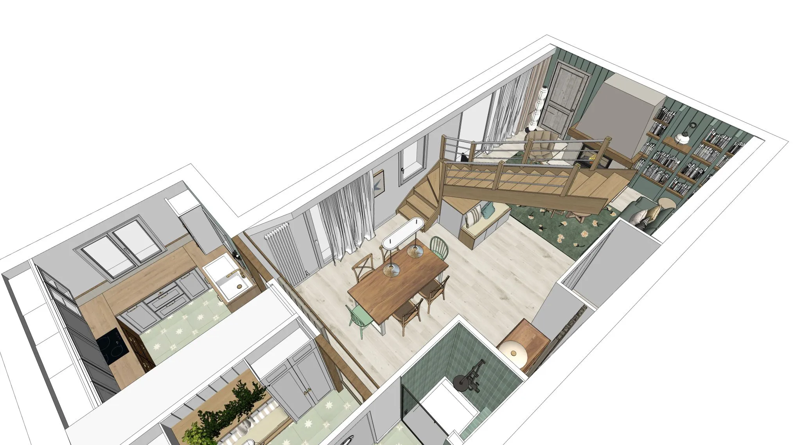
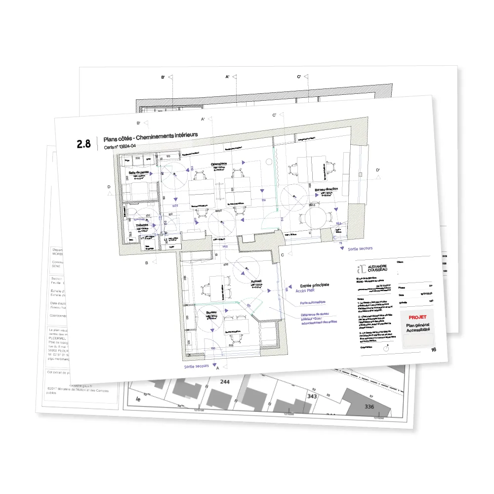
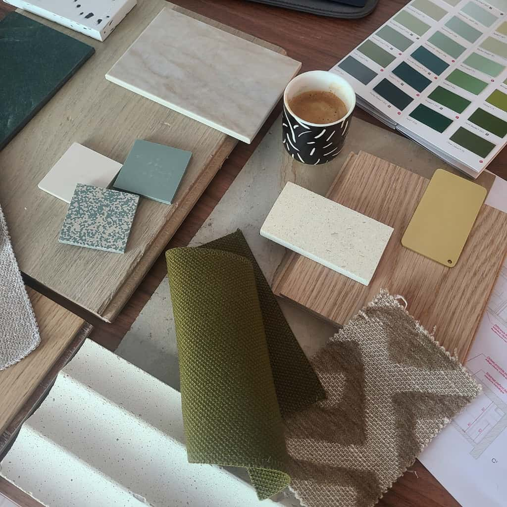
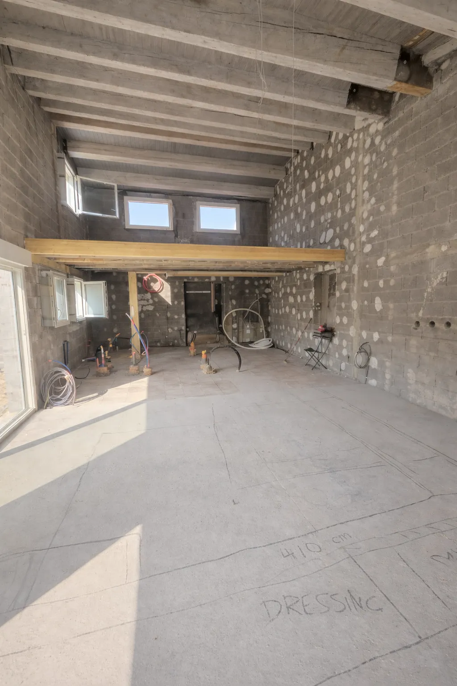

Spécialisé dans la rénovation, la conception et l'aménagement de vos espaces de vie et de travail, j'accompagne particuliers et professionnels dans la conception d'espaces haut de gamme, entièrement pensés sur mesure.
Installé à Redon, j'interviens plus largement dans le Morbihan et Loire-Atlantique notamment Vannes, Sarzeau, Muzillac, Guérande et Saint-Nazaire.
Mon rôle est de transformer une idée en un projet clair, structuré et maîtrisé, de la première esquisse jusqu'à la livraison finale.
Je conçois, sécurise et accompagne vos projets de rénovation pour que le résultat soit exactement celui que vous avez validé : un espace fonctionnel, fluide et pensé dans les moindres détails.
Vous n'achetez pas seulement des plans ou des visuels 3d
Vous investissez pour de la clarté, des décisions prises au bon moment, des erreurs évitées et un résultat fidèle à ce que vous aviez imaginé.

Chaque projet résout un problème différent, voici comment certains clients ont transformé leur espace


Pour transformer une idée floue en évidence

Lors de ce premier rendez-vous (à domicile ou dans vos locaux), nous prenons le temps d’observer et de comprendre vos espaces : circulation, lumière, usage des pièces, contraintes techniques, potentiel esthétique… Rien n’est laissé au hasard.
C’est un moment d’échange essentiel : je découvre votre mode de vie, vos envies, vos inspirations, et vous pouvez mettre des mots sur ce que vous souhaitez vraiment transformer.
Cette première rencontre nous permet de vérifier ensemble la faisabilité du projet, d’envisager les premières pistes d’aménagement, de définir une enveloppe budgétaire et un planning.

La phase de conception transforme les idées en un projet concret, clair et structuré.
Je conçois pour vous un projet entièrement personnalisé : plans d’aménagement optimisés, agencement réfléchi, vues 3D réalistes et vidéos immersives pour vous permettre de vous projeter dans votre futur espace avant même le début des travaux.
Chaque choix est pensé pour trouver l’équilibre entre esthétique, fonctionnalité et budget. Cette étape permet de figer les grandes orientations du projet, d’anticiper chaque détail et d’éviter les mauvaises surprises.

Je prends en charge les déclarations administratives nécessaires et vous guide dans les obligations réglementaires : déclaration préalable de travaux, permis de construire, demandes liées à la mise en conformité des ERP, réglementations de sécurité et d’accessibilité.
Je prépare l’ensemble des documents nécessaires : notices, plans, pièces administratives… afin de constituer un dossier clair, sécurisé et complet pour le dépôt.
Vous gardez la vision du projet, je m’occupe des formalités et limite les allers-retours avec l’administration.

Parce que l’identité d’un projet se joue dans les détails, je sélectionne et vous présente avec soin les échantillons matériaux afin que vous puissiez voir, toucher et ressentir l’ambiance complète du projet et ainsi valider les choix en toute confiance.
En collaboration avec des marques de qualité et haut de gamme, je peux commander pour vous l'ensemble du mobilier, luminaires et accessoires décoratifs présents dans le projet.
Je vous présente plusieurs références adaptées à votre projet en privilégiant la qualité, la durabilité et l'harmonie visuelle.
Je coordonne les achats et prends en charge l'ensemble des commandes et leur suivi pour que tout soit livré directement sur place, prêt à être installé et vécu.

Pour donner vie au projet, je vous mets en relation avec des artisans locaux qualifiés et de confiance garantissant une réalisation conforme et dans les délais.
J’organise et supervise la préparation et le déroulement du chantier :
analyse des devis avec optimisation budgétaire, planning d’exécution, réunions de chantier régulières et comptes rendus précis.
Chaque élément est coordonné pour garantir une exécution fluide et fidèle au projet initial.
Un chantier mieux maîtrisé, un budget contrôlé et un espace livré conforme à ce que nous avons imaginé ensemble.


Dans le cadre d'un projet de rénovation de tout le rez de chaussée de notre maison, nous avons confié à Alexandre la mission de nous réaliser un projet d'aménagement des espaces et des conseils de décoration.
Dès le premier rendez-vous sur place, son professionnalisme se dégage dans la compréhension de notre projet avec ses problématiques.
Il élabore plusieurs propositions avec des idées novatrices avec une bonne connaissance des matériaux et des normes en vigueur.
Son accompagnement est précieux avec une grande réactivité dans ses réponses, dans des visuels 3D permettant de mieux se rendre compte des nouveaux espaces et cela va même jusqu'aux conseils sur les matériaux, le mobilier, la décoration avec diverses variantes et la réalisation d'un dossier pour les artisans.
Bref, un véritable accompagnement sur toutes les étapes joignant professionnalisme et confiance du fait d'un contact agréable et bienveillant.
Anne et Laurent

Nous avons fait appel à Mr Cousseau dans le cadre des démarches de notre projet locatif.
Nous sommes très satisfaits de sa prestation. Il aura été de bons conseils sur le projet, les visuels étaient très pro et nous ont permis de nous projeter facilement en terme d'aménagement et de décoration.
Il a suivi au plus près le dossier auprès du service urbanisme et à été très réactif quand il a fallu effectuer des modifications afin de faire en sorte que celui-ci aboutisse rapidement.
Je recommande vivement.

Nous avons fait appel à Alexandre pour le projet d’aménagement et de rénovation de notre maison, située sur la commune de Plescop.
Il a tout de suite compris le style que nous souhaitions et nous a proposé des plans et des visuels magnifiques, avec de très bonnes idées et conseils.
Bien que sa prestation soit terminée, il reste malgré tout à notre écoute en cas de besoin, et nous accompagne jusqu’au bout du projet. Maintenant, nous avons hâte que notre projet voie le jour.
Vous pouvez lui faire confiance les yeux fermés. Merci Alexandre !